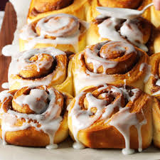

Ingredients
Dough:
- 1/-ounce package yeast
- 1/2 cup warm water
- 1/2 cup scaleded milk
- 1/4 cup sugar
- 1/3 cup butter or shortening
- 1 teaspoon salt
- 1 egg
- 3 1/2 to 4 cups all-purpose flower
Filling:
- 1/2 cup melted butter,plus more for pan
- 3/4 cup sugar, plus more for pan
- 2 tablespoons ground cinamon
- 3/4 cup raisins, walnuts, or pecans, optional
Glaze:
- 4 tablespoons butter
- 2 cups powdered sugar
- 1 teaspoon vanilla extract
- 3-6 tablespoons hot water
Directions:
- Heat oven to 350 degrees F.
- In a smal bowl, dissolve yeast
in warm water and set aside. In a
large bowl mix milk, sugar, melted
butter, salt and egg. Add 2 cups of
flour and mix milk until smooth.
Add yeast mixture. Mix in remaining flour
until dough is easy to handle. Knead dough
on lightly floured surface for 5 to 10 minutes.
Place in well-greased bowl,cover and let
rise until doubled in size usally 1 to
1 1/2 hours
- When doubled in size, punch down
dough. Roll out on a floured surface
into a 15in by 9-inch rectangle. Spread
meltedbutter all over dough. Mix sugar
and cinnamon and sprinkle over buttered dough.
Sprinke with walnuts, pecans, or raisins
if desired. Beginning at the 15-inch
side, role up dough and pinch edge
together to seal Cut into 12-15 slices
- Coat the bottom of backin pan width
butterand sprinkle with sugar. Place
cinnamon roll slices close together in
pan and let rise until dough in doubled
about 45 minutes. Bake for about 30 minutes
or until nicely browned.
- Meanwhile, mix butter, powdered sugar,
and vanilla. Add hot water 1 tablespoon at a
time until the glaze reaches desired
consistency. Spread over slightly cooled rolls
Paula Deens Cinnamon Rolls
Contact Me
Email Me!
The University of Montana
32 Campus Dr
Missoula, MT 59812